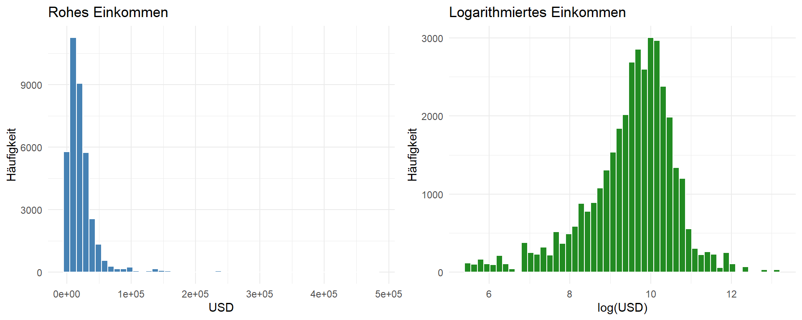
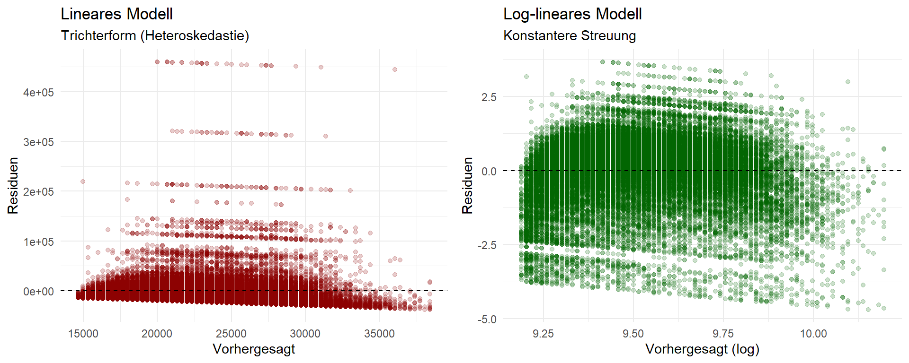

Regressionsanalysen
Einkommen sind typischerweise rechtsschief verteilt: Wenige Top-Verdiener ziehen den Mittelwert nach rechts.
p_real = ggplot(df_clean, aes(x = realrinc)) +
geom_histogram(bins = 50, fill = "steelblue", color = "white") +
theme_minimal() +
labs(title = "Rohes Einkommen", x = "USD", y = "Häufigkeit")
p_log = ggplot(df_clean, aes(x = log(realrinc))) +
geom_histogram(bins = 50, fill = "forestgreen", color = "white") +
theme_minimal() +
labs(title = "Logarithmiertes Einkommen", x = "log(USD)", y = "Häufigkeit")
grid.arrange(p_real, p_log, ncol = 2)
Figure 1
Vergleich der Regression von Einkommen auf das Alter (\(\text{Einkommen} \sim \text{Alter}\)).
| R's income in constant$ | |||
|---|---|---|---|
| Predictors | Estimates | CI | p |
| (Intercept) | 8628.73 | 7720.61 – 9536.85 | <0.001 |
| Age of respondent | 334.33 | 313.27 – 355.39 | <0.001 |
| Observations | 37825 | ||
| R2 / R2 adjusted | 0.025 / 0.025 | ||
| AIC | 882587.716 | ||
| R's income in constant$ | |||
|---|---|---|---|
| Predictors | Estimates | CI | p |
| (Intercept) | 8.93 | 8.90 – 8.97 | <0.001 |
| Age of respondent | 0.01 | 0.01 – 0.02 | <0.001 |
| Observations | 37825 | ||
| R2 / R2 adjusted | 0.030 / 0.029 | ||
| AIC | 834221.357 | ||
df_clean <- df_clean %>%
mutate(
fitted_lin = fitted(m_linear),
resid_lin = residuals(m_linear),
fitted_log = fitted(m_log),
resid_log = residuals(m_log)
)
p1 <- ggplot(df_clean, aes(x = fitted_lin, y = resid_lin)) +
geom_point(alpha = 0.2, color = "darkred") +
geom_hline(yintercept = 0, linetype = "dashed") +
theme_minimal() +
labs(title = "Lineares Modell", subtitle = "Trichterform (Heteroskedastie)",
x = "Vorhergesagt", y = "Residuen")
p2 <- ggplot(df_clean, aes(x = fitted_log, y = resid_log)) +
geom_point(alpha = 0.2, color = "darkgreen") +
geom_hline(yintercept = 0, linetype = "dashed") +
theme_minimal() +
labs(title = "Log-lineares Modell", subtitle = "Konstantere Streuung",
x = "Vorhergesagt (log)", y = "Residuen")
grid.arrange(p1, p2, ncol = 2)
Figure 2
Wie interpretieren wir den Effekt des Alters im Log-Modell?